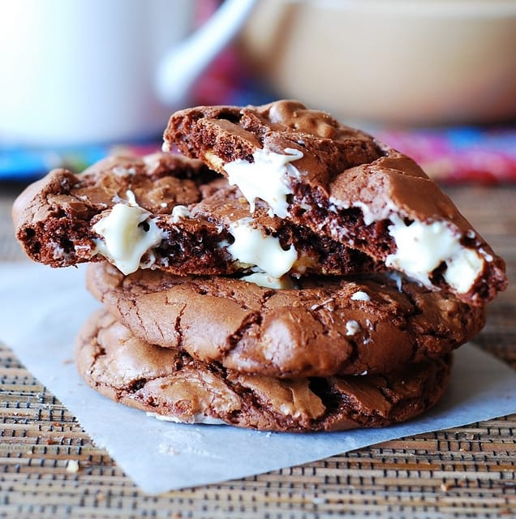

chewy chocolate cookie

Description
I named it "Ultimate Chocolate Chip Cookies,” because it’s got everything a cookie connoisseur could possibly ask for. With a texture that is slightly crispy on the outside and chewy on the inside, it’s a favorite chocolate chip cookie recipe
Ingredients
- 2 1/4
cups Gold Medal™ all-purpose flour
- 1
teaspoon baking soda
- 1 tsp salt
- 1 cup sugar
- 1 egg
- 1 teaspoon vanilla
- 1 egg
- 1 teaspoon vanilla
Steps
1. Heat oven to 375°F. In small bowl, mix flour, baking soda and salt; set aside.
2. In large bowl, beat softened butter and sugars with electric mixer on medium speed, or mix with spoon about 1 minute or until fluffy, scraping side of bowl occasionally.
3. Beat in egg and vanilla until smooth. Stir in flour mixture just until blended (dough will be stiff). Stir in chocolate chips and nuts.
4. Onto ungreased cookie sheets, drop dough by rounded tablespoonfuls 2 inches apart.
5.Bake 8 to 10 minutes or until light brown (centers will be soft). Cool 2 minutes; remove from cookie sheet to cooling rack. Cool completely, about 30 minutes. Store covered in airtight container.
Return to top
Return to main page